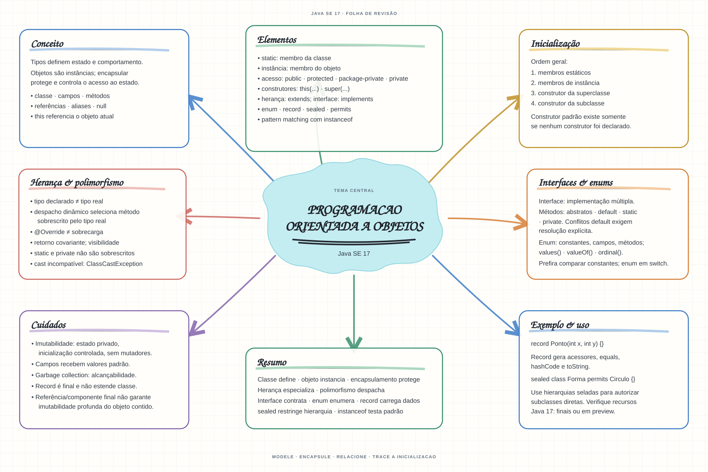

Escolha um assunto para abrir as notas de estudo. Os mapas mentais complementam o conteúdo como material de revisão.


Abrir mapa mental do capítuloMARCO DE CONCLUSÃO
Modele uma tarefa com estado encapsulado e demonstre como construtores, interfaces e sobrescrita organizam o comportamento.
Como este capítulo se relaciona com cada exame
1Z0-808 · Java 8
POO básica é reaproveitável; records e sealed não existem em Java 8.
1Z0-829 · Java 17
Base de estudo deste portal; confirme o mapeamento com o blueprint vigente.
1Z0-830 · Java 21
Conceitos úteis; revise recursos de linguagem e regras de Java 21.
Orientação editorial sobre reaproveitamento do material; não representa objetivos oficiais nem garante cobertura do exame. Consulte o comparativo e as fontes da Oracle.